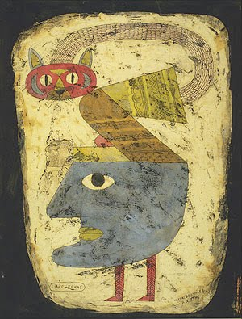

An introductory course on category theory and its applications.
This year, the course will be held in two separate tracks.
You can choose to follow one XOR the other; the difference will be in the background assumed of the student, and (slightly) in the course content itself.
You are free to choose which track to follow or switch at any point. At the end of the semester, you will still be able to choose on which track you want to be examined. The grading criteria and methods will be the same.
| Thursday | 16:00 - 17:30 | SCI-120 (A) / SOC-221 (B) (with exceptions, see below) |
| Friday | 17:15 - 18:45 | SCI-120 (A) / SOC-221 (B) (with exceptions, see below) |
If you want to meet me, (email to agree on a time, and) come to CYB building - Akadeemia tee 15/2, 12618 Tallinn.
Good references for studying category theory are:
| Tom Leinster | Basic Category Theory | Perfect for the real beginner. | |
| Steve Awodey | Category Theory | Particularly suited for logicians. | |
| Micheal Barr & Charles Wells | Category Theory for Computing Science | Particularly suited for computer scientists. | |
| Emily Riehl | Category Theory in Context | A fresh, detailed guide to the ideas of category theory. | |
| Francis Borceux | Handbook of Categorical Algebra | A monumental treatment of category theory, in three volumes. | |
| Saunders Mac Lane | Categories for the Working Mathematician | A classic text on category theory, written by its founding father. |
Notes for the track B course (link)
Exercitia Spiritualia (last: 08/02/25)
These "Spiritual Exercises" are designed for those who want to challenge themselves with the course material, and for those who need a riddle every now and then; their submission is not mandatory, they are not part of any exam, and there is no penalty for those who attempt to solve them and do not succeed.
[...] Something will appear here in due time [...]
The grade will be assigned based on two exercise sheets assigned during the lecture course, and a final oral exam.
For the final exam, you will choose a topic from a list, and give a short presentation about it.

Victor Brauner, Arche-chat, 1948,
Herbert F. Johnson Museum of Art
(Cornell University), Ithaca, NY, US.